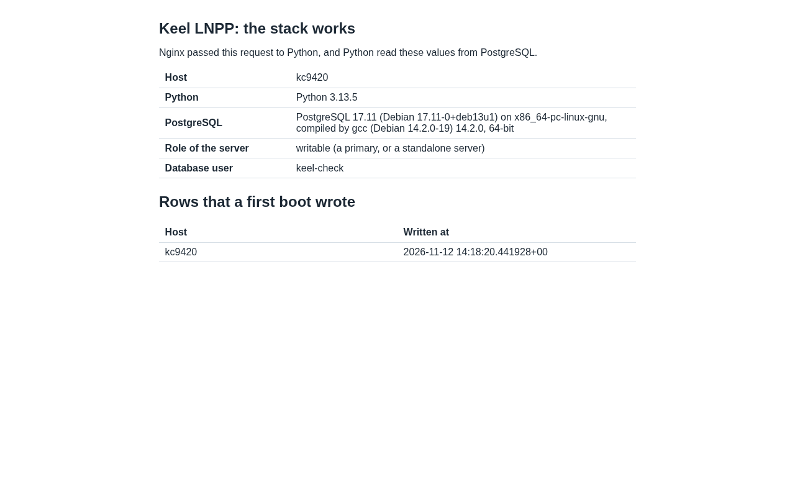
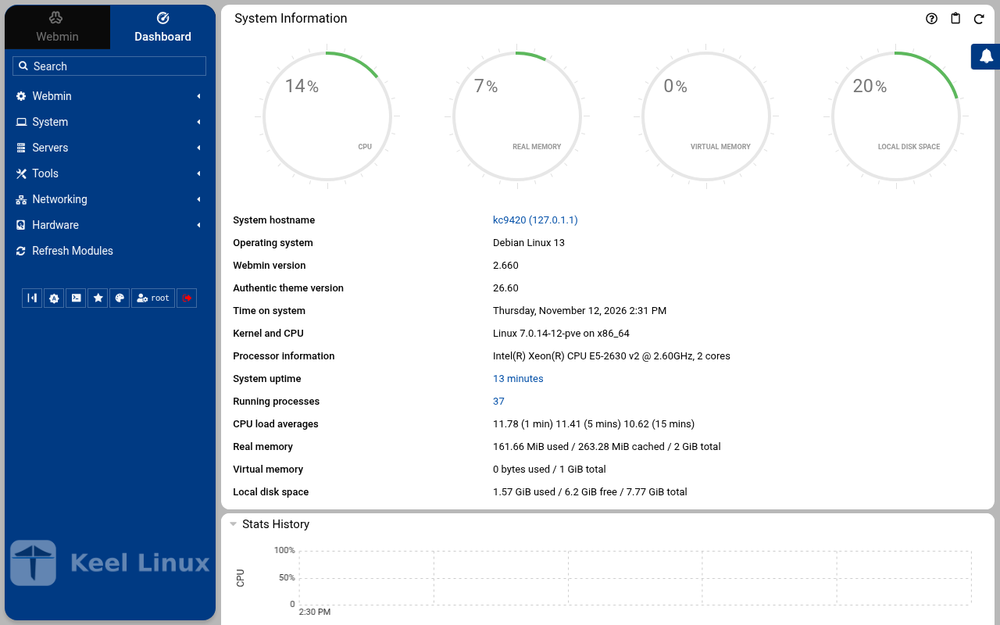
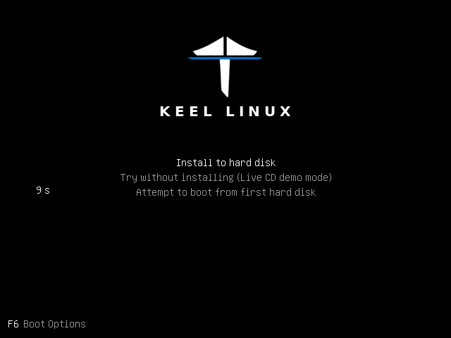
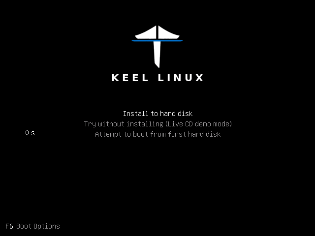
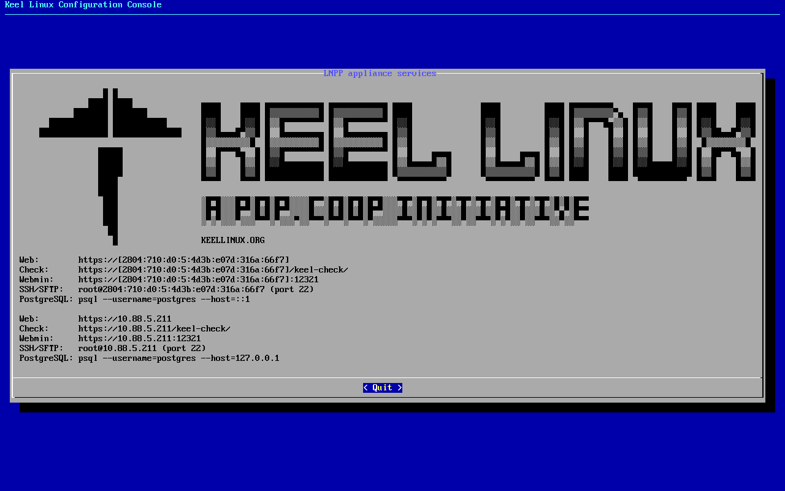

Appliances / Keel LNPP
Keel LNPPPostgreSQL 17 and Python 3
Keel release 19.0-10 · image debian-13-keel-lnpp_19.0-10_amd64.tar.zst
The LNPP stack of Keel Linux (handbook decision 0059): Nginx, PostgreSQL 17 and Python 3 with gunicorn, a layer on the web layer.
Install
LXC template, for Proxmox VE
debian-13-keel-lnpp_19.0-10_amd64.tar.zst
sha256 0fe16d74e14b56f921d086f12dc53b661df7ab4de9cbc717ba2e51868ecbdff0
With the Keel index
keel-pve gets the signed index of the Keel templates and checks the template against it. The Templates dialog of the Proxmox web interface does not show Keel templates. Install keel-pve from the Keel archive, suite trixie-testing, as its README says. Then run these commands on the Proxmox node:
keel-pve update keel-pve download local keel-lnpp
With the file
- Download the template, its
.sha512and its.sha512.asc. - Check the signature. Then check the digest.
- Copy the template to
/var/lib/vz/template/cache/on the Proxmox node.
curl -fLO https://mirror.keellinux.org/images/debian-13-keel-lnpp_19.0-10_amd64.tar.zst -O https://mirror.keellinux.org/images/debian-13-keel-lnpp_19.0-10_amd64.tar.zst.sha512 -O https://mirror.keellinux.org/images/debian-13-keel-lnpp_19.0-10_amd64.tar.zst.sha512.asc curl -fLO https://archive.keellinux.org/keel-images-keyring.asc sqv --keyring keel-images-keyring.asc debian-13-keel-lnpp_19.0-10_amd64.tar.zst.sha512.asc debian-13-keel-lnpp_19.0-10_amd64.tar.zst.sha512 sha512sum -c debian-13-keel-lnpp_19.0-10_amd64.tar.zst.sha512 cp debian-13-keel-lnpp_19.0-10_amd64.tar.zst /var/lib/vz/template/cache/
If sqv prints E71DB9C3CA6AC18075395CC3ED3A709C4F3E2F3C, the signature is good. It also prints "Missing key" for the main key of the project. This is expected.
Make the container
pct create 200 local:vztmpl/debian-13-keel-lnpp_19.0-10_amd64.tar.zst --hostname lnpp \ --unprivileged 1 --features nesting=1 \ --net0 name=eth0,bridge=vmbr0,ip6=auto
Start the container and log in on its console as root. The first boot asks its questions there.
ISO, for a virtual or a real machine
debian-13-keel-lnpp_19.0-10_amd64.iso
sha256 eb40c6f7f0012f431fab58f4734ecc050b782018de63fd059fdf691ff3cfc5a3
curl -fLO https://mirror.keellinux.org/images/debian-13-keel-lnpp_19.0-10_amd64.iso -O https://mirror.keellinux.org/images/debian-13-keel-lnpp_19.0-10_amd64.iso.sha512 -O https://mirror.keellinux.org/images/debian-13-keel-lnpp_19.0-10_amd64.iso.sha512.asc curl -fLO https://archive.keellinux.org/keel-images-keyring.asc sqv --keyring keel-images-keyring.asc debian-13-keel-lnpp_19.0-10_amd64.iso.sha512.asc debian-13-keel-lnpp_19.0-10_amd64.iso.sha512 sha512sum -c debian-13-keel-lnpp_19.0-10_amd64.iso.sha512
Boot the machine from the ISO and install. The first boot of the installed system asks the same questions as the template.
The first boot
The questions of the first boot, of all the modes and roles. A node asks only those of its mode and role (the guides below show each one):
- Root Password password
- PostgreSQL Password password
- System Notifications
- Installation mode
- Role of this node
- Invite a node
- Join a mesh
No password is copied between nodes: only the invite lines (decision 0076).
Services
nginx, postgresql, keel-lnpp-check.socket, webmin, cron, postfix, ssh, monit
Addresses the commissioning checked
https://127.0.0.1/https://127.0.0.1/keel-check/http://127.0.0.1/http://127.0.0.1/keel-check/http://127.0.0.1/keel-healthhttps://127.0.0.1:12321/
Screenshots

open /


open /keel-check/

user root, the root secret


after the login: the page the login opened
Installation modes
Each column is one machine. Each row is one screen, in the order the machine showed it, with what the operator typed or chose. A secret is named, never shown.
Simple: one node
the LXC template, answered on the console (br1)
- 1
root password
the screen, as text
Connected to tty 1 Type <Ctrl+a q> to exit the console, <Ctrl+a Ctrl+a> to enter Ctrl+a itself press Enter within 5 s to answer first-boot questions Keel KC9420 appliance services < Quit > Web:https://[2804:710:d0:5:be24:11ff:febc:6844]Check:https://[2804:710:d0:5:be24:11ff:febc:6844]/keel-check/Webmin: https://[2804:710:d0:5:be24:11ff:febc:6844]:12321SSH/SFTP: root@2804:710:d0:5:be24:11ff:febc:6844 (port 22)PostgreSQL: psql --username=postgres --host=::1Web:https://10.88.5.234Check:https://10.88.5.234/keel-check/Webmin: https://10.88.5.234:12321SSH/SFTP: root@10.88.5.234 (port 22)PostgreSQL: psql --username=postgres --host=127.0.0.1 Keel Linux Configuration Console KC9420 appliance services < Quit > Web:https://[2804:710:d0:5:be24:11ff:febc:6844]Check:https://[2804:710:d0:5:be24:11ff:febc:6844]/keel-check/Webmin: https://[2804:710:d0:5:be24:11ff:febc:6844]:12321SSH/SFTP: root@2804:710:d0:5:be24:11ff:febc:6844 (port 22)PostgreSQL: psql --username=postgres --host=::1Web:https://10.88.5.234Check:https://10.88.5.234/keel-check/Webmin: https://10.88.5.234:12321SSH/SFTP: root@10.88.5.234 (port 22)PostgreSQL: psql --username=postgres --host=127.0.0.1 Debian GNU/Linux 13 kc9420 tty1 kc9420 login: root Password: Keel Linux lnpp 19.0-trixie-amd64 IPv6 Web: https://[2804:710:d0:5:be24:11ff:febc:6844] IPv6 SSH: root@2804:710:d0:5:be24:11ff:febc:6844 IPv4 Web: https://10.88.5.234 IPv4 SSH: root@10.88.5.234 Welcome to kc9420, Keel Linux 19.0 (Debian 13/Trixie) System information for Thu Nov 12 14:18:46 2026 (UTC+0000) System load: 20.74 Memory usage: 10.1% Processes: 41 Swap usage: 0.0% Usage of /: 14.6% of 7.78GB IP address for eth0: 10.88.5.234 This system is not initialized yet: run keel-init to set it up. For Advanced commandline config run: confconsole For more info see: https://github.com/Keel-Linux/confconsole Linux kc9420 7.0.14-12-pve #1 SMP PREEMPT_DYNAMIC PMX 7.0.14-12 (2026-08-11T11:05Z) x86_64 === Keel Linux - First boot configuration Root Password Please enter new password for the root account. Choose how to set this password: Generate A strong random password (recommended) Manual Type my own password < OK >Generate A strong random password (recommended)Manual Type my own password Keel Linux - First boot configuration Root Password Please enter new password for the root account. Password Requirements - must be at least 8 characters long - must contain characters from at least 3 of the following categories: uppercase, lowercase, numbers, symbols < OK >x
typed:
(the root secret) - 2
root password
the screen, as text
******** Keel Linux - First boot configuration Root Password Confirm password Password Requirements - must be at least 8 characters long - must contain characters from at least 3 of the following categories: uppercase, lowercase, numbers, symbols < OK >x
typed:
(the root secret) - 3
db password
the screen, as text
******** Keel Linux - First boot configuration kc9420.pop.coop Domain name xxx The name this machine is reached by, with its domain, xx for example blog.example.org. It becomes the hostname, xx the name /etc/hosts answers for this machine, and the xx domain a TLS certificate is requested for in xx confconsole.xxxx Leave the field empty to keep the name the machine has. xxxx Fully qualified domain name:x <Apply>x >fqdn: /etc/keel/instance.yaml already declares the name, not written === Keel Linux - First boot configuration PostgreSQL Password Please enter new password for the 'postgres' account. Choose how to set this password: Generate A strong random password (recommended) Manual Type my own password < OK >Generate A strong random password (recommended)Manual Type my own password Keel Linux - First boot configuration PostgreSQL Password Please enter new password for the 'postgres' account. Password Requirements - must be at least 8 characters long - must contain characters from at least 3 of the following categories: uppercase, lowercase, numbers, symbols < OK >x
typed:
(the db secret) - 4
db password
the screen, as text
******** Keel Linux - First boot configuration PostgreSQL Password Confirm password Password Requirements - must be at least 8 characters long - must contain characters from at least 3 of the following categories: uppercase, lowercase, numbers, symbols < OK >x
typed:
(the db secret) - 5
alert email
the screen, as text
********>PostgreSQL role 'postgres' has a password, set on the console (35pgsqlpass); no DB_PASS to log in with, so the catalogue is what was checked NOTICE: relation "boot" already exists, skipping 40lnpp-check: the check page reads keel_check as keel-check, a row for kc9420 is in its table === Keel Linux - First boot configuration Installation mode How this appliance is installed (decision 0028). You choose it once. Simple: one node. Everything is on this machine, with no mesh. Cloud simple: two nodes, a primary and a replica on a WireGuard mesh. The data follows the primary. When the primary stops, you promote the replica by hand. Cloud advanced: two data nodes and a witness, three sites, etcd of three. When the primary stops, the replica takes over by itself. Choose the same mode on every node of the set. Simple one node, no mesh Cloud simple two nodes, failover by hand Cloud advanced two nodes and a witness, failover by itself <Select> Keel Linux - First boot configuration Installation mode < ok >x /etc/keel/instance.yaml: installation.mode: simple$ keel spec apply --system-only --non-interactive --skip-network --defer-certificate --spec/etc/keel/instance.yamlapply --system-only: /etc/inithooks.conf not read or writteninstance.hostname: unchanged (kc9420)instance.fqdn: unchanged (/etc/hosts maps kc9420 to kc9420.pop.coop)derived.monit: write /etc/keel/monit/keel-manifest.conf: 5 unit(s) and 5 probe(s) of lnpp (mode 0600): doneoverlays.syncthing: unchanged (disabled: syncthing.service)overlays.anubis: run /usr/lib/keel/overlays/anubis/state.d/50keel-web: the overlay is disabled(/usr/lib/keel/overlays/anubis/state.d/50keel-web disabled): doneoverlays.anubis: record disabled and the hooks' digest in /var/lib/keel/overlays/anubis (mode 0644): doneoverlays.coraza: run /usr/lib/keel/overlays/coraza/state: the overlay is disabled(/usr/lib/keel/overlays/coraza/state disabled): doneoverlays.coraza: record disabled and the hooks' digest in /var/lib/keel/overlays/coraza (mode 0644): doneoverlays.vip: unchanged (disabled: keel-vip.service)overlays.crowdsec: unchanged (disabled: crowdsec.service, crowdsec-firewall-bouncer.service)overlays.etcd: unchanged (disabled: etcd.service)overlays.nginx: unchanged (enabled: nginx.service)apply --system-only: 5 change(s), 0 failedkeel apply: exit 0, the spec was applied>keelfirstboot role: recorded database.server.role: standalone (postgresql) keelfirstboot cloud: Keel Cloud is not available yet: no key is asked, and this node runs standalone. It is offered once /etc/keel/cloud-endpoint names the service. === Keel Linux - First boot configuration System Notifications and Critical Security Alerts Enable local system notifications (root@localhost) to be forwarded to your regular inbox. Notifications include security updates and system messages. Email: <Enable> < Skip >x
typed:
admin@example.org - 6
web: site
typed:
open / - 7
- 8
- 9
the ISO in a virtual machine (br1)
- 1
- 2
installer-boot

- 3
installer-boot

- 4
- 5
separate boot

typed:
n - 6
scheme

typed:
<ret> - 7
- 8
begin

typed:
y - 9
installer-wait

- 10
- 11
medium

typed:
<ret><ret> - 12
- 13
root password

typed:
(the root secret)<ret> - 14
root password

typed:
(the root secret)<ret> - 15
- 16
- 17
- 18
- 19
- 20
- 21
- 22
alert email

typed:
admin@example.org<ret> - 23
firstboot-screen

typed:
<ret> - 24
- 25
firstboot-end

- 26
web: site

typed:
open / - 27
- 28
- 29


Cloud simple: two nodes, failover by hand
| Step | Primary, BR1 | Replica, BR2 |
|---|---|---|
| 1 | root password the screen, as textConnected to tty 1 Type <Ctrl+a q> to exit the console, <Ctrl+a Ctrl+a> to enter Ctrl+a itself press Enter within 5 s to answer first-boot questions Keel KC9423 appliance services < Quit > Web:https://[2804:710:d0:5:be24:11ff:fe50:e916]Check:https://[2804:710:d0:5:be24:11ff:fe50:e916]/keel-check/Webmin: https://[2804:710:d0:5:be24:11ff:fe50:e916]:12321SSH/SFTP: root@2804:710:d0:5:be24:11ff:fe50:e916 (port 22)PostgreSQL: psql --username=postgres --host=::1Web:https://10.88.5.246Check:https://10.88.5.246/keel-check/Webmin: https://10.88.5.246:12321SSH/SFTP: root@10.88.5.246 (port 22)PostgreSQL: psql --username=postgres --host=127.0.0.1 Keel Linux Configuration Console KC9423 appliance services < Quit > Web:https://[2804:710:d0:5:be24:11ff:fe50:e916]Check:https://[2804:710:d0:5:be24:11ff:fe50:e916]/keel-check/Webmin: https://[2804:710:d0:5:be24:11ff:fe50:e916]:12321SSH/SFTP: root@2804:710:d0:5:be24:11ff:fe50:e916 (port 22)PostgreSQL: psql --username=postgres --host=::1Web:https://10.88.5.246Check:https://10.88.5.246/keel-check/Webmin: https://10.88.5.246:12321SSH/SFTP: root@10.88.5.246 (port 22)PostgreSQL: psql --username=postgres --host=127.0.0.1 Debian GNU/Linux 13 kc9423 tty1 kc9423 login: root Password: Keel Linux lnpp 19.0-trixie-amd64 IPv6 Web: https://[2804:710:d0:5:be24:11ff:fe50:e916] IPv6 SSH: root@2804:710:d0:5:be24:11ff:fe50:e916 IPv4 Web: https://10.88.5.246 IPv4 SSH: root@10.88.5.246 Welcome to kc9423, Keel Linux 19.0 (Debian 13/Trixie) System information for Thu Nov 12 14:18:54 2026 (UTC+0000) System load: 19.69 Memory usage: 10.7% Processes: 41 Swap usage: 0.0% Usage of /: 14.6% of 7.78GB IP address for eth0: 10.88.5.246 This system is not initialized yet: run keel-init to set it up. For Advanced commandline config run: confconsole For more info see: https://github.com/Keel-Linux/confconsole Linux kc9423 7.0.14-12-pve #1 SMP PREEMPT_DYNAMIC PMX 7.0.14-12 (2026-08-11T11:05Z) x86_64 === Keel Linux - First boot configuration Root Password Please enter new password for the root account. Choose how to set this password: Generate A strong random password (recommended) Manual Type my own password < OK >Generate A strong random password (recommended)Manual Type my own password Keel Linux - First boot configuration Root Password Please enter new password for the root account. Password Requirements - must be at least 8 characters long - must contain characters from at least 3 of the following categories: uppercase, lowercase, numbers, symbols < OK >x typed: | root password the screen, as textConnected to tty 1 Type <Ctrl+a q> to exit the console, <Ctrl+a Ctrl+a> to enter Ctrl+a itself press Enter within 5 s to answer first-boot questions Keel KC9424 appliance services < Quit > Web:https://[fd00:218:88:0:9738:2d19:257e:8f51]Check:https://[fd00:218:88:0:9738:2d19:257e:8f51]/keel-check/Webmin: https://[fd00:218:88:0:9738:2d19:257e:8f51]:12321SSH/SFTP: root@fd00:218:88:0:9738:2d19:257e:8f51 (port 22)PostgreSQL: psql --username=postgres --host=::1Web:https://10.218.88.142Check:https://10.218.88.142/keel-check/Webmin: https://10.218.88.142:12321SSH/SFTP: root@10.218.88.142 (port 22)PostgreSQL: psql --username=postgres --host=127.0.0.1 Keel Linux Configuration Console KC9424 appliance services < Quit > Web:https://[fd00:218:88:0:9738:2d19:257e:8f51]Check:https://[fd00:218:88:0:9738:2d19:257e:8f51]/keel-check/Webmin: https://[fd00:218:88:0:9738:2d19:257e:8f51]:12321SSH/SFTP: root@fd00:218:88:0:9738:2d19:257e:8f51 (port 22)PostgreSQL: psql --username=postgres --host=::1Web:https://10.218.88.142Check:https://10.218.88.142/keel-check/Webmin: https://10.218.88.142:12321SSH/SFTP: root@10.218.88.142 (port 22)PostgreSQL: psql --username=postgres --host=127.0.0.1 Debian GNU/Linux 13 kc9424 tty1 kc9424 login: root Password: Keel Linux lnpp 19.0-trixie-amd64 IPv6 Web: https://[2804:7f0:9880:202:4f91:11ba:b815:259a] IPv6 SSH: root@2804:7f0:9880:202:4f91:11ba:b815:259a IPv4 Web: https://10.218.88.142 IPv4 SSH: root@10.218.88.142 Welcome to kc9424, Keel Linux 19.0 (Debian 13/Trixie) System information for Thu Nov 12 14:23:21 2026 (UTC+0000) System load: 21.94 Memory usage: 9.4% Processes: 44 Swap usage: 0.0% Usage of /: 10.2% of 8.00GB IP address for eth0: 10.218.88.142 This system is not initialized yet: run keel-init to set it up. For Advanced commandline config run: confconsole For more info see: https://github.com/Keel-Linux/confconsole Linux kc9424 7.0.14-19-pve #1 SMP PREEMPT_DYNAMIC PMX 7.0.14-19 (2026-09-18T07:31Z) x86_64 === Keel Linux - First boot configuration Root Password Please enter new password for the root account. Choose how to set this password: Generate A strong random password (recommended) Manual Type my own password < OK >Generate A strong random password (recommended)Manual Type my own password Keel Linux - First boot configuration Root Password Please enter new password for the root account. Password Requirements - must be at least 8 characters long - must contain characters from at least 3 of the following categories: uppercase, lowercase, numbers, symbols < OK >x typed: |
| 2 | root password the screen, as text******** Keel Linux - First boot configuration Root Password Confirm password Password Requirements - must be at least 8 characters long - must contain characters from at least 3 of the following categories: uppercase, lowercase, numbers, symbols < OK >x typed: | root password the screen, as text******** Keel Linux - First boot configuration Root Password Confirm password Password Requirements - must be at least 8 characters long - must contain characters from at least 3 of the following categories: uppercase, lowercase, numbers, symbols < OK >x typed: |
| 3 | db password the screen, as text******** Keel Linux - First boot configuration kc9423.pop.coop Domain name xxx The name this machine is reached by, with its domain, xx for example blog.example.org. It becomes the hostname, xx the name /etc/hosts answers for this machine, and the xx domain a TLS certificate is requested for in xx confconsole.xxxx Leave the field empty to keep the name the machine has. xxxx Fully qualified domain name:x <Apply>x >fqdn: /etc/keel/instance.yaml already declares the name, not written === Keel Linux - First boot configuration PostgreSQL Password Please enter new password for the 'postgres' account. Choose how to set this password: Generate A strong random password (recommended) Manual Type my own password < OK >Generate A strong random password (recommended)Manual Type my own password Keel Linux - First boot configuration PostgreSQL Password Please enter new password for the 'postgres' account. Password Requirements - must be at least 8 characters long - must contain characters from at least 3 of the following categories: uppercase, lowercase, numbers, symbols < OK >x typed: | db password the screen, as text******** Keel Linux - First boot configuration kc9424.pop.coop Domain name xxx The name this machine is reached by, with its domain, xx for example blog.example.org. It becomes the hostname, xx the name /etc/hosts answers for this machine, and the xx domain a TLS certificate is requested for in xx confconsole.xxxx Leave the field empty to keep the name the machine has. xxxx Fully qualified domain name:x <Apply>x >fqdn: /etc/keel/instance.yaml already declares the name, not written === Keel Linux - First boot configuration PostgreSQL Password Please enter new password for the 'postgres' account. Choose how to set this password: Generate A strong random password (recommended) Manual Type my own password < OK >Generate A strong random password (recommended)Manual Type my own password Keel Linux - First boot configuration PostgreSQL Password Please enter new password for the 'postgres' account. Password Requirements - must be at least 8 characters long - must contain characters from at least 3 of the following categories: uppercase, lowercase, numbers, symbols < OK >x typed: |
| 4 | db password the screen, as text******** Keel Linux - First boot configuration PostgreSQL Password Confirm password Password Requirements - must be at least 8 characters long - must contain characters from at least 3 of the following categories: uppercase, lowercase, numbers, symbols < OK >x typed: | db password the screen, as text******** Keel Linux - First boot configuration PostgreSQL Password Confirm password Password Requirements - must be at least 8 characters long - must contain characters from at least 3 of the following categories: uppercase, lowercase, numbers, symbols < OK >x typed: |
| 5 | mode the screen, as text********>PostgreSQL role 'postgres' has a password, set on the console (35pgsqlpass); no DB_PASS to log in with, so the catalogue is what was checked NOTICE: relation "boot" already exists, skipping 40lnpp-check: the check page reads keel_check as keel-check, a row for kc9423 is in its table === Keel Linux - First boot configuration Installation mode How this appliance is installed (decision 0028). You choose it once. Simple: one node. Everything is on this machine, with no mesh. Cloud simple: two nodes, a primary and a replica on a WireGuard mesh. The data follows the primary. When the primary stops, you promote the replica by hand. Cloud advanced: two data nodes and a witness, three sites, etcd of three. When the primary stops, the replica takes over by itself. Choose the same mode on every node of the set. Simple one node, no mesh Cloud simple two nodes, failover by hand Cloud advanced two nodes and a witness, failover by itself <Select> typed: | mode the screen, as text********>PostgreSQL role 'postgres' has a password, set on the console (35pgsqlpass); no DB_PASS to log in with, so the catalogue is what was checked NOTICE: relation "boot" already exists, skipping 40lnpp-check: the check page reads keel_check as keel-check, a row for kc9424 is in its table === Keel Linux - First boot configuration Installation mode How this appliance is installed (decision 0028). You choose it once. Simple: one node. Everything is on this machine, with no mesh. Cloud simple: two nodes, a primary and a replica on a WireGuard mesh. The data follows the primary. When the primary stops, you promote the replica by hand. Cloud advanced: two data nodes and a witness, three sites, etcd of three. When the primary stops, the replica takes over by itself. Choose the same mode on every node of the set. Simple one node, no mesh Cloud simple two nodes, failover by hand Cloud advanced two nodes and a witness, failover by itself <Select> typed: |
| 6 | role the screen, as textSimpleone node, no meshCloud simple two nodes, failover by hand> == Keel Linux - First boot configuration Installation mode < ok >x /etc/keel/instance.yaml: installation.mode: cloud_simple$ keel spec apply --system-only --non-interactive --skip-network --defer-certificate --spec/etc/keel/instance.yaml2026-11-12 14:19:14 INF Generating key and certificate (cn=syncthing log.pkg=syncthing)2026-11-12 14:19:14 INF Calculated device ID(device=RHRMN6V-F26WZPA-6HY47YS-ODVPWXE-675RIDU-4X2JEO5-FA2BOPY-OZ3HNQ6 log.pkg=github)apply --system-only: /etc/inithooks.conf not read or writteninstance.hostname: unchanged (kc9423)instance.fqdn: unchanged (/etc/hosts maps kc9423 to kc9423.pop.coop)derived.monit: crowdsec not watched: crowdsec.service starts only when /etc/crowdsec/local_api_credentials.yamlexists (ConditionPathExists)derived.monit: crowdsec-lapi not watched: its process crowdsec is not watched: crowdsec.service starts only when/etc/crowdsec/local_api_credentials.yaml exists (ConditionPathExists)derived.monit: write /etc/keel/monit/keel-manifest.conf: 8 unit(s) and 8 probe(s) of lnpp (mode 0600): doneoverlays.vip: unchanged (disabled: keel-vip.service)overlays.etcd: unchanged (disabled: etcd.service)overlays.crowdsec: create /etc/crowdsec/online_api_credentials.yaml empty, which CrowdSec's unit needs and whichsays not registered yet (mode 0600): doneoverlays.crowdsec: register this machine with CrowdSec's local API; cscli writes the password to/etc/crowdsec/local_api_credentials.yaml (cscli --error machines add --auto --force): doneoverlays.crowdsec: register with CrowdSec's central API (cscli --error capi register): doneoverlays.crowdsec: register CrowdSec's firewall bouncer (cscli bouncers add) and write its key to/etc/crowdsec/bouncers/crowdsec-firewall-bouncer.yaml.local (mode 0600, never printed) and its name to/etc/crowdsec/bouncers/crowdsec-firewall-bouncer.yaml.id, mode: nftables: doneoverlays.crowdsec: enable crowdsec.service: the overlay is enabled (systemctl enable crowdsec.service): doneoverlays.crowdsec: start crowdsec.service (systemctl start crowdsec.service): doneoverlays.crowdsec: enable crowdsec-firewall-bouncer.service: the overlay is enabled (systemctl enablecrowdsec-firewall-bouncer.service): doneoverlays.crowdsec: start crowdsec-firewall-bouncer.service (systemctl start crowdsec-firewall-bouncer.service):done57% Keel Linux - First boot configuration Role of this node What this node is in its set of two (cloud simple). Primary: the first node. It makes the mesh and invites the replica with a line you copy to it. Replica: the second node. It joins with that line, and its data follows the primary. Primary the first node: makes the mesh, invites Replica joins the primary; its data follows it <Select> typed: | role the screen, as textSimpleone node, no meshCloud simple two nodes, failover by hand> == Keel Linux - First boot configuration Installation mode < ok >x /etc/keel/instance.yaml: installation.mode: cloud_simple$ keel spec apply --system-only --non-interactive --skip-network --defer-certificate --spec/etc/keel/instance.yaml2026-11-12 14:23:50 INF Generating key and certificate (cn=syncthing log.pkg=syncthing)2026-11-12 14:23:50 INF Calculated device ID(device=2WUSRNW-LIIHXA3-U7ASKHU-DIFFTEU-KUV6ZFG-PZU5DV2-TXNGQXX-KNYZWAX log.pkg=github)apply --system-only: /etc/inithooks.conf not read or writteninstance.hostname: unchanged (kc9424)instance.fqdn: unchanged (/etc/hosts maps kc9424 to kc9424.pop.coop)derived.monit: crowdsec not watched: crowdsec.service starts only when /etc/crowdsec/local_api_credentials.yamlexists (ConditionPathExists)derived.monit: crowdsec-lapi not watched: its process crowdsec is not watched: crowdsec.service starts only when/etc/crowdsec/local_api_credentials.yaml exists (ConditionPathExists)derived.monit: write /etc/keel/monit/keel-manifest.conf: 8 unit(s) and 8 probe(s) of lnpp (mode 0600): doneoverlays.vip: unchanged (disabled: keel-vip.service)overlays.etcd: unchanged (disabled: etcd.service)overlays.crowdsec: create /etc/crowdsec/online_api_credentials.yaml empty, which CrowdSec's unit needs and whichsays not registered yet (mode 0600): doneoverlays.crowdsec: register this machine with CrowdSec's local API; cscli writes the password to/etc/crowdsec/local_api_credentials.yaml (cscli --error machines add --auto --force): doneoverlays.crowdsec: register with CrowdSec's central API (cscli --error capi register): doneoverlays.crowdsec: register CrowdSec's firewall bouncer (cscli bouncers add) and write its key to/etc/crowdsec/bouncers/crowdsec-firewall-bouncer.yaml.local (mode 0600, never printed) and its name to/etc/crowdsec/bouncers/crowdsec-firewall-bouncer.yaml.id, mode: nftables: doneoverlays.crowdsec: enable crowdsec.service: the overlay is enabled (systemctl enable crowdsec.service): doneoverlays.crowdsec: start crowdsec.service (systemctl start crowdsec.service): doneoverlays.crowdsec: enable crowdsec-firewall-bouncer.service: the overlay is enabled (systemctl enablecrowdsec-firewall-bouncer.service): doneoverlays.crowdsec: start crowdsec-firewall-bouncer.service (systemctl start crowdsec-firewall-bouncer.service):done57% Keel Linux - First boot configuration Role of this node What this node is in its set of two (cloud simple). Primary: the first node. It makes the mesh and invites the replica with a line you copy to it. Replica: the second node. It joins with that line, and its data follows the primary. Primary the first node: makes the mesh, invites Replica joins the primary; its data follows it <Select> typed: |
| 7 | invite the screen, as textKeel Linux - First boot configuration keel mesh create: making the mesh... Keel Linux - First boot configuration Make the mesh < ok >x $ keel mesh createcreated the mesh: this node is fd91:cda9:b5e8::1/64 on wg0, WireGuard on UDP 51820keel mesh invite prints the line that joins the next nodeconfirming the new overlayconfirmed from keel mesh createthe overlay has no peer, so nothing can cross it: keel mesh create confirmed it once the routes to the gatewaysand to the operator's session were found to still leave through the uplinkwg-quick@wg0 enabled: the overlay comes back up at bootthe network change stays; the revert is cancelledmesh: this node holds the mesh's root CA, which signs the database certificates of a cloud simple pairkeel mesh: exit 0, done>Invite a node This node invites the replica (node 2) into its mesh. Copy the line below to the replica (node 2): paste it into its Join a mesh screen, or run it there as root. It can be used once, until 2026-11-12T15:19:55Z. The line carries the service address of the pair, shown below: this node writes it as its appliance.vip, and the replica takes it from the join. Nobody types it. Copy this line to the replica (node 2), on one line, as it is. It is a secret: it lets one node join this mesh. keel mesh join - <<< <invite 1> VIP: fd91:cda9:b5e8::ffff:1 Expires: 2026-11-12T15:19:55Z Press Enter to go on: typed: | join the screen, as textPrimary the first node: makes the mesh, invitesReplica joins the primary; its data follows it Keel Linux - First boot configuration Join a mesh Paste the line that Invite a node shows on the inviting node: keel mesh join - <<< keel2:... The token alone (keel2:...) is accepted too. It goes to keel on its standard input, never on a command line. < OK > <Cancel>x typed: |
| 8 | alert email the screen, as text<Select> < Back >x 4 3 2 1 0 Keel Linux - First boot configuration Waiting for the nodes Waiting for the replica (node 2) to join with the line, checked every 5 s. Back gives a menu: Paste accept line, when the join printed one (keel mesh accept keel1a:...), or the line again. This node: fd91:cda9:b5e8::1/64 VIP: fd91:cda9:b5e8::ffff:1, holder none yet 5 <Select> < Back >x 4 3 2 1 0 Keel Linux - First boot configuration Take the VIP Waiting for the replica to pair with this node (keel vip pair on the replica). Then this node applies its description and takes the VIP. If the replica says it paired and nothing moves here, choose Back and Take it now. This node: fd91:cda9:b5e8::1/64 Member: fd91:cda9:b5e8::ec45, reached VIP: fd91:cda9:b5e8::ffff:1, holder none yet 5 <Select> < Back >x 4 3 2 1> == Keel Linux - First boot configuration Take the VIP < ok >x $ keel vip promotefd91:cda9:b5e8::ec45: appliedthis node holds fd91:cda9:b5e8::ffff:1 at epoch 1, on wg0, taken by the other member of the pair; the otherpeers are told in the backgroundkeel vip: exit 0, done Keel Linux - First boot configuration Status of this node < ok >x $ keel vip statusvip fd91:cda9:b5e8::ffff:1: this node's appliance.viprole: primaryepoch 1, held by <public key> at fd91:cda9:b5e8::1carried here: yesrouted to: no peer$ keel mesh statusthis node: fd91:cda9:b5e8::1/64 on wg0, WireGuard on UDP 51820mesh identity: 100356a1fc614665a659e7f199c653f7public key: <public key>peers: 1<public key> fd91:cda9:b5e8::ec45/128[2804:7f0:9880:202:4f91:11ba:b815:259a]:51820 handshake 23 s agopending invites: 0etcd: not on this node (installation.mode cloud_simple; etcd runs on cloud advanced members only)vip fd91:cda9:b5e8::ffff:1: this node's appliance.viprole: primaryepoch 1, held by <public key> at fd91:cda9:b5e8::1carried here: yesrouted to: no peer$ keel database statuspair: VIP fd91:cda9:b5e8::ffff:1; role here primaryother member: fd91:cda9:b5e8::ec45 (<public key>)the primary's address: fd91:cda9:b5e8::1dump: none yetserver: primary (runuser -u postgres -- psql --no-psqlrc -At -F-c SELECT type, address, netmask FROM pg_hpg_hba_file_rules WHERE 'replication' = ANY(database): replication is allowed from fd91:cda9:b5e8::ec45/128)timeline: 1synchronous commit: on, synchronous_standby_names 'FIRST 1 (keel)'74% >keelfirstboot cloud: Keel Cloud is not available yet: no key is asked, and this node runs standalone. It is offered once /etc/keel/cloud-endpoint names the service. === Keel Linux - First boot configuration System Notifications and Critical Security Alerts Enable local system notifications (root@localhost) to be forwarded to your regular inbox. Notifications include security updates and system messages. Email: <Enable> < Skip >x typed: | alert email the screen, as textwg-quick@wg0 enabled: the overlay comes back up at boot
the network change stays; the revert is cancelled
joined the mesh: this node is fd91:cda9:b5e8::ec45/64 on wg0
peer: <public key> at fd91:cda9:b5e8::1, through [2804:710:d0:5:be24:11ff:fe50:e916]:51820
the mesh is up with 2 nodes; etcd starts when a third node joins, because 2 etcd members cannot lose one and keep a majority
vip: fd91:cda9:b5e8::ffff:1, proposed by the inviter for the pair (appliance.vip on both nodes; keel mesh status --json gives it)
Press Enter to go on: == Keel Linux - First boot configuration
< Yes >< No >x
Becoming a replica REPLACES the data on this node with a copy of the primary at [fd91:cda9:b5e8::1].If this server holds any database that is not its own, keel refuses and this console asks once more, namingthem; a Yes there drops them and cannot be undone. Move anything you need elsewhere first.This screen configures THIS node only. It does not create replicas, does not change any other machine, andcannot know what the others are doing. It changes the database server and leaves the network and the TLScertificate alone.Go on and make this node a replica?
Keel Linux - First boot configuration
Pair with the primary
< ok >x
$ keel vip pair fd91:cda9:b5e8::1fd91:cda9:b5e8::ffff:1 is the VIP of <public key> and<public key>, signed by bothkeel vip: exit 0, done
Keel Linux - First boot configuration
Pair with the primary
Paired. Waiting for the primary to take the VIP: its screen does it
once this node has paired.
This node: fd91:cda9:b5e8::ec45/64
Member: fd91:cda9:b5e8::1, reached
VIP: fd91:cda9:b5e8::ffff:1, holder none yet
5
<Select> < Back >x
4 3 2 1>
== Keel Linux - First boot configuration
Pair with the primary
< ok >x
/etc/keel/instance.yaml: database.server.role: replica$ keel spec apply --system-only --non-interactive --skip-network --defer-certificate --spec/etc/keel/instance.yamlapply --system-only: /etc/inithooks.conf not read or writteninstance.hostname: unchanged (kc9424)instance.fqdn: unchanged (/etc/hosts maps kc9424 to kc9424.pop.coop)database.server: make or renew the database certificate for fd91:cda9:b5e8::ec45 and fd91:cda9:b5e8::ffff:1,signed by the mesh's root CA (here, or asked of its holder over the members' channel), under the engine's TLSdirectory (etc/mysql/keel-tls or etc/postgresql/keel-tls): donedatabase.server: write /etc/sysctl.d/90-keel-database.conf: both nodes bind the VIP (mode 0644): donedatabase.server: let the server bind the VIP before it carries it (sysctl -q -w net.ipv6.ip_nonlocal_bind=1):donedatabase.server: write etc/postgresql/17/main/conf.d/99-keel-database.conf: a paired node, primary-capable, thepair's hba and TLS, the VIP fd91:cda9:b5e8::ffff:1 bound (mode 0644): done
database.server: write etc/postgresql/17/main/conf.d/98-keel-pair.conf: the pair's synchronous commit and theident map it points at (mode 0644): donedatabase.server: write etc/postgresql/17/main/keel-pg_hba.conf: the pair's authorizations, the peer'scertificate pinned (mode 0644): donedatabase.server: write etc/postgresql/17/main/keel-pg_ident.conf: the peer's certificate CN mapped to thereplication role (mode 0644): donedatabase.server: restart the server, which is the only way these take effect (systemctl restart postgresql):donedatabase.server.replication.allowed_from: ensure the replication slot of the pair exists on the primary (runuser-u postgres -- psql --no-psqlrc --tuples-only --no-align '--field-separator= ' --set=ON_ERROR_STOP=1, 2 stastatement(s) on standard input): donedatabase.server.replication.allowed_from: ensure the replication role holds the pair's password (runuser -upostgres -- psql --no-psqlrc --tuples-only --no-align '--field-separator= ' --set=ON_ERROR_STOP=1, 7 statemstatement(s) on standard input): donedatabase.server.replication.allowed_from: ensure the replication role may read the files that pg_rewind reads(runuser -u postgres -- psql --no-psqlrc --tuples-only --no-align '--field-separator= ' --set=ON_ERROR_STOP=1, 1045%
Keel Linux - First boot configuration
Status of this node
< ok >x
$ keel vip statusvip fd91:cda9:b5e8::ffff:1: this node's appliance.viprole: replicaepoch 1, held by <public key> at fd91:cda9:b5e8::1carried here: norouted to: <public key>$ keel mesh statusthis node: fd91:cda9:b5e8::ec45/64 on wg0, WireGuard on UDP 51820mesh identity: 100356a1fc614665a659e7f199c653f7public key: <public key>peers: 1<public key> fd91:cda9:b5e8::1/128 [2804:710:d0:5:be24:11ff:fe50:e916]:51820handshake 43 s agopending invites: 0etcd: not on this node (installation.mode cloud_simple; etcd runs on cloud advanced members only)vip fd91:cda9:b5e8::ffff:1: this node's appliance.viprole: replicaepoch 1, held by <public key> at fd91:cda9:b5e8::1carried here: norouted to: <public key>$ keel database statuspair: VIP fd91:cda9:b5e8::ffff:1; role here replicaother member: fd91:cda9:b5e8::1 (<public key>)the primary's address: fd91:cda9:b5e8::1dump: none yetserver: replica (runuser -u postgres -- psql --no-psqlrc -At -F-c SELECT pg_is_in_recovery(), (SELECT coucount(*) FROM pg_stat_replication WHERE client_addr IS NOT NULL), current_setting('port'): pg_is_in_recovery()is true)timeline: 172%
>keelfirstboot cloud: Keel Cloud is not available yet: no key is asked, and this node runs standalone. It is offered once /etc/keel/cloud-endpoint names the service.
=== Keel Linux - First boot configuration
System Notifications and Critical Security Alerts
Enable local system notifications (root@localhost) to be
forwarded to your regular inbox. Notifications include
security updates and system messages.
Email:
<Enable> < Skip >xtyped: |
| 9 | web: site  typed: | web: site  typed: |
| 10 | ||
| 11 | ||
| 12 |


Cloud advanced: two data nodes and a witness
| Step | Primary, BR1 | Replica, BR2 | Witness, BR1 |
|---|---|---|---|
| 1 | root password the screen, as textConnected to tty 1 Type <Ctrl+a q> to exit the console, <Ctrl+a Ctrl+a> to enter Ctrl+a itself press Enter within 5 s to answer first-boot questions Keel KC9425 appliance services < Quit > Web:https://[2804:710:d0:5:be24:11ff:fe59:a287]Check:https://[2804:710:d0:5:be24:11ff:fe59:a287]/keel-check/Webmin: https://[2804:710:d0:5:be24:11ff:fe59:a287]:12321SSH/SFTP: root@2804:710:d0:5:be24:11ff:fe59:a287 (port 22)PostgreSQL: psql --username=postgres --host=::1Web:https://10.88.5.207Check:https://10.88.5.207/keel-check/Webmin: https://10.88.5.207:12321SSH/SFTP: root@10.88.5.207 (port 22)PostgreSQL: psql --username=postgres --host=127.0.0.1 Keel Linux Configuration Console KC9425 appliance services < Quit > Web:https://[2804:710:d0:5:be24:11ff:fe59:a287]Check:https://[2804:710:d0:5:be24:11ff:fe59:a287]/keel-check/Webmin: https://[2804:710:d0:5:be24:11ff:fe59:a287]:12321SSH/SFTP: root@2804:710:d0:5:be24:11ff:fe59:a287 (port 22)PostgreSQL: psql --username=postgres --host=::1Web:https://10.88.5.207Check:https://10.88.5.207/keel-check/Webmin: https://10.88.5.207:12321SSH/SFTP: root@10.88.5.207 (port 22)PostgreSQL: psql --username=postgres --host=127.0.0.1 Debian GNU/Linux 13 kc9425 tty1 kc9425 login: root Password: Keel Linux lnpp 19.0-trixie-amd64 IPv6 Web: https://[2804:710:d0:5:be24:11ff:fe59:a287] IPv6 SSH: root@2804:710:d0:5:be24:11ff:fe59:a287 IPv4 Web: https://10.88.5.207 IPv4 SSH: root@10.88.5.207 Welcome to kc9425, Keel Linux 19.0 (Debian 13/Trixie) System information for Thu Nov 12 14:43:43 2026 (UTC+0000) System load: 17.03 Memory usage: 12.3% Processes: 41 Swap usage: 0.0% Usage of /: 14.6% of 7.78GB IP address for eth0: 10.88.5.207 This system is not initialized yet: run keel-init to set it up. For Advanced commandline config run: confconsole For more info see: https://github.com/Keel-Linux/confconsole Linux kc9425 7.0.14-12-pve #1 SMP PREEMPT_DYNAMIC PMX 7.0.14-12 (2026-08-11T11:05Z) x86_64 === Keel Linux - First boot configuration Root Password Please enter new password for the root account. Choose how to set this password: Generate A strong random password (recommended) Manual Type my own password < OK >Generate A strong random password (recommended)Manual Type my own password Keel Linux - First boot configuration Root Password Please enter new password for the root account. Password Requirements - must be at least 8 characters long - must contain characters from at least 3 of the following categories: uppercase, lowercase, numbers, symbols < OK >x typed: | root password the screen, as textConnected to tty 1 Type <Ctrl+a q> to exit the console, <Ctrl+a Ctrl+a> to enter Ctrl+a itself press Enter within 5 s to answer first-boot questions Keel KC9426 appliance services < Quit > Web:https://[fd00:218:88:0:6918:929e:4310:221f]Check:https://[fd00:218:88:0:6918:929e:4310:221f]/keel-check/Webmin: https://[fd00:218:88:0:6918:929e:4310:221f]:12321SSH/SFTP: root@fd00:218:88:0:6918:929e:4310:221f (port 22)PostgreSQL: psql --username=postgres --host=::1Web:https://10.218.88.155Check:https://10.218.88.155/keel-check/Webmin: https://10.218.88.155:12321SSH/SFTP: root@10.218.88.155 (port 22)PostgreSQL: psql --username=postgres --host=127.0.0.1 Keel Linux Configuration Console KC9426 appliance services < Quit > Web:https://[fd00:218:88:0:6918:929e:4310:221f]Check:https://[fd00:218:88:0:6918:929e:4310:221f]/keel-check/Webmin: https://[fd00:218:88:0:6918:929e:4310:221f]:12321SSH/SFTP: root@fd00:218:88:0:6918:929e:4310:221f (port 22)PostgreSQL: psql --username=postgres --host=::1Web:https://10.218.88.155Check:https://10.218.88.155/keel-check/Webmin: https://10.218.88.155:12321SSH/SFTP: root@10.218.88.155 (port 22)PostgreSQL: psql --username=postgres --host=127.0.0.1 Debian GNU/Linux 13 kc9426 tty1 kc9426 login: root Password: Keel Linux lnpp 19.0-trixie-amd64 IPv6 Web: https://[2804:7f0:9880:202:1581:f086:6d5b:1b15] IPv6 SSH: root@2804:7f0:9880:202:1581:f086:6d5b:1b15 IPv4 Web: https://10.218.88.155 IPv4 SSH: root@10.218.88.155 Welcome to kc9426, Keel Linux 19.0 (Debian 13/Trixie) System information for Thu Nov 12 14:47:07 2026 (UTC+0000) System load: 18.79 Memory usage: 9.4% Processes: 44 Swap usage: 0.0% Usage of /: 10.2% of 8.00GB IP address for eth0: 10.218.88.155 This system is not initialized yet: run keel-init to set it up. For Advanced commandline config run: confconsole For more info see: https://github.com/Keel-Linux/confconsole Linux kc9426 7.0.14-19-pve #1 SMP PREEMPT_DYNAMIC PMX 7.0.14-19 (2026-09-18T07:31Z) x86_64 === Keel Linux - First boot configuration Root Password Please enter new password for the root account. Choose how to set this password: Generate A strong random password (recommended) Manual Type my own password < OK >Generate A strong random password (recommended)Manual Type my own password Keel Linux - First boot configuration Root Password Please enter new password for the root account. Password Requirements - must be at least 8 characters long - must contain characters from at least 3 of the following categories: uppercase, lowercase, numbers, symbols < OK >x typed: | root password the screen, as textConnected to tty 1 Type <Ctrl+a q> to exit the console, <Ctrl+a Ctrl+a> to enter Ctrl+a itself press Enter within 5 s to answer first-boot questions Keel Linux Configuration Console KC9427 appliance services < Quit > Webmin: https://[2804:710:d0:5:be24:11ff:fec8:9701]:12321SSH/SFTP: root@2804:710:d0:5:be24:11ff:fec8:9701 (port 22) Debian GNU/Linux 13 kc9427 tty1 kc9427 login: root Password: Keel Linux core 19.0-trixie-amd64 IPv6 SSH: root@2804:710:d0:5:be24:11ff:fec8:9701 Welcome to kc9427, Keel Linux 19.0 (Debian 13/Trixie) System information for Thu Nov 12 14:50:20 2026 (UTC+0000) System load: 10.56 Memory usage: 8.9% Processes: 29 Swap usage: 0.0% Usage of /: 9.9% of 7.78GB Networking not configured This system is not initialized yet: run keel-init to set it up. For Advanced commandline config run: confconsole For more info see: https://github.com/Keel-Linux/confconsole Linux kc9427 7.0.14-12-pve #1 SMP PREEMPT_DYNAMIC PMX 7.0.14-12 (2026-08-11T11:05Z) x86_64 === Keel Linux - First boot configuration Root Password Please enter new password for the root account. Choose how to set this password: Generate A strong random password (recommended) Manual Type my own password < OK >Generate A strong random password (recommended)Manual Type my own password Keel Linux - First boot configuration Root Password Please enter new password for the root account. Password Requirements - must be at least 8 characters long - must contain characters from at least 3 of the following categories: uppercase, lowercase, numbers, symbols < OK >x typed: |
| 2 | root password the screen, as text******** Keel Linux - First boot configuration Root Password Confirm password Password Requirements - must be at least 8 characters long - must contain characters from at least 3 of the following categories: uppercase, lowercase, numbers, symbols < OK >x typed: | root password the screen, as text******** Keel Linux - First boot configuration Root Password Confirm password Password Requirements - must be at least 8 characters long - must contain characters from at least 3 of the following categories: uppercase, lowercase, numbers, symbols < OK >x typed: | root password the screen, as text******** Keel Linux - First boot configuration Root Password Confirm password Password Requirements - must be at least 8 characters long - must contain characters from at least 3 of the following categories: uppercase, lowercase, numbers, symbols < OK >x typed: |
| 3 | db password the screen, as text******** Keel Linux - First boot configuration kc9425.pop.coop Domain name xxx The name this machine is reached by, with its domain, xx for example blog.example.org. It becomes the hostname, xx the name /etc/hosts answers for this machine, and the xx domain a TLS certificate is requested for in xx confconsole.xxxx Leave the field empty to keep the name the machine has. xxxx Fully qualified domain name:x <Apply>x >fqdn: /etc/keel/instance.yaml already declares the name, not written === Keel Linux - First boot configuration PostgreSQL Password Please enter new password for the 'postgres' account. Choose how to set this password: Generate A strong random password (recommended) Manual Type my own password < OK >Generate A strong random password (recommended)Manual Type my own password Keel Linux - First boot configuration PostgreSQL Password Please enter new password for the 'postgres' account. Password Requirements - must be at least 8 characters long - must contain characters from at least 3 of the following categories: uppercase, lowercase, numbers, symbols < OK >x typed: | db password the screen, as text******** Keel Linux - First boot configuration kc9426.pop.coop Domain name xxx The name this machine is reached by, with its domain, xx for example blog.example.org. It becomes the hostname, xx the name /etc/hosts answers for this machine, and the xx domain a TLS certificate is requested for in xx confconsole.xxxx Leave the field empty to keep the name the machine has. xxxx Fully qualified domain name:x <Apply>x >fqdn: /etc/keel/instance.yaml already declares the name, not written === Keel Linux - First boot configuration PostgreSQL Password Please enter new password for the 'postgres' account. Choose how to set this password: Generate A strong random password (recommended) Manual Type my own password < OK >Generate A strong random password (recommended)Manual Type my own password Keel Linux - First boot configuration PostgreSQL Password Please enter new password for the 'postgres' account. Password Requirements - must be at least 8 characters long - must contain characters from at least 3 of the following categories: uppercase, lowercase, numbers, symbols < OK >x typed: | mode the screen, as text******** Keel Linux - First boot configuration kc9427.pop.coop Domain name xxx The name this machine is reached by, with its domain, xx for example blog.example.org. It becomes the hostname, xx the name /etc/hosts answers for this machine, and the xx domain a TLS certificate is requested for in xx confconsole.xxxx Leave the field empty to keep the name the machine has. xxxx Fully qualified domain name:x <Apply>x >fqdn: /etc/keel/instance.yaml already declares the name, not written === Keel Linux - First boot configuration Installation mode How this appliance is installed (decision 0028). You choose it once. Simple: one node. Everything is on this machine, with no mesh. Cloud simple: two nodes, a primary and a replica on a WireGuard mesh. The data follows the primary. When the primary stops, you promote the replica by hand. Cloud advanced: two data nodes and a witness, three sites, etcd of three. When the primary stops, the replica takes over by itself. Choose the same mode on every node of the set. Simple one node, no mesh Cloud simple two nodes, failover by hand Cloud advanced two nodes and a witness, failover by itself <Select> typed: |
| 4 | db password the screen, as text******** Keel Linux - First boot configuration PostgreSQL Password Confirm password Password Requirements - must be at least 8 characters long - must contain characters from at least 3 of the following categories: uppercase, lowercase, numbers, symbols < OK >x typed: | db password the screen, as text******** Keel Linux - First boot configuration PostgreSQL Password Confirm password Password Requirements - must be at least 8 characters long - must contain characters from at least 3 of the following categories: uppercase, lowercase, numbers, symbols < OK >x typed: | role the screen, as textSimpleone node, no meshCloud simple two nodes, failover by handCloud simple two nodes, failover by handCloud advanced two nodes and a witness, failover by itself> == Keel Linux - First boot configuration Installation mode < ok >x /etc/keel/instance.yaml: installation.mode: cloud_advanced$ keel spec apply --system-only --non-interactive --skip-network --defer-certificate --spec/etc/keel/instance.yamlapply --system-only: /etc/inithooks.conf not read or writteninstance.hostname: unchanged (kc9427)instance.fqdn: unchanged (/etc/hosts maps kc9427 to kc9427.pop.coop)derived.monit: crowdsec not watched: crowdsec.service starts only when /etc/crowdsec/local_api_credentials.yamlexists (ConditionPathExists)derived.monit: crowdsec-lapi not watched: its process crowdsec is not watched: crowdsec.service starts only when/etc/crowdsec/local_api_credentials.yaml exists (ConditionPathExists)derived.monit: write /etc/keel/monit/keel-manifest.conf: 5 unit(s) and 4 probe(s) of core (mode 0600): doneoverlays.vip: unchanged (disabled: keel-vip.service)overlays.etcd: etcd waits for its cluster: it forms at the third cloud advanced member's join, or with keel meshetcd form; nothing is started until thenoverlays.crowdsec: create /etc/crowdsec/online_api_credentials.yaml empty, which CrowdSec's unit needs and whichsays not registered yet (mode 0600): doneoverlays.crowdsec: register this machine with CrowdSec's local API; cscli writes the password to/etc/crowdsec/local_api_credentials.yaml (cscli --error machines add --auto --force): doneoverlays.crowdsec: register with CrowdSec's central API (cscli --error capi register): doneoverlays.crowdsec: register CrowdSec's firewall bouncer (cscli bouncers add) and write its key to/etc/crowdsec/bouncers/crowdsec-firewall-bouncer.yaml.local (mode 0600, never printed) and its name to/etc/crowdsec/bouncers/crowdsec-firewall-bouncer.yaml.id, mode: nftables: doneoverlays.crowdsec: enable crowdsec.service: the overlay is enabled (systemctl enable crowdsec.service): doneoverlays.crowdsec: start crowdsec.service (systemctl start crowdsec.service): doneoverlays.crowdsec: enable crowdsec-firewall-bouncer.service: the overlay is enabled (systemctl enablecrowdsec-firewall-bouncer.service): doneoverlays.crowdsec: start crowdsec-firewall-bouncer.service (systemctl start crowdsec-firewall-bouncer.service):doneapply --system-only: 9 change(s), 0 failed94% Keel Linux - First boot configuration Role of this node What this node is in its set of three (cloud advanced). Primary: the first node. It makes the mesh and invites the replica, then the witness, each with a line you copy to it. Replica: the second node. It joins with the first line, and its data follows the primary. Witness: the third node, Keel Core on a third site. It joins with the second line and gives etcd its third vote. It holds no data. Primary the first node: makes the mesh, invites Replica joins the primary; its data follows it Witness Keel Core on a third site: a vote, no data <Select> typed: |
| 5 | mode the screen, as text********>PostgreSQL role 'postgres' has a password, set on the console (35pgsqlpass); no DB_PASS to log in with, so the catalogue is what was checked NOTICE: relation "boot" already exists, skipping 40lnpp-check: the check page reads keel_check as keel-check, a row for kc9425 is in its table === Keel Linux - First boot configuration Installation mode How this appliance is installed (decision 0028). You choose it once. Simple: one node. Everything is on this machine, with no mesh. Cloud simple: two nodes, a primary and a replica on a WireGuard mesh. The data follows the primary. When the primary stops, you promote the replica by hand. Cloud advanced: two data nodes and a witness, three sites, etcd of three. When the primary stops, the replica takes over by itself. Choose the same mode on every node of the set. Simple one node, no mesh Cloud simple two nodes, failover by hand Cloud advanced two nodes and a witness, failover by itself <Select> typed: | mode the screen, as text********>PostgreSQL role 'postgres' has a password, set on the console (35pgsqlpass); no DB_PASS to log in with, so the catalogue is what was checked NOTICE: relation "boot" already exists, skipping 40lnpp-check: the check page reads keel_check as keel-check, a row for kc9426 is in its table === Keel Linux - First boot configuration Installation mode How this appliance is installed (decision 0028). You choose it once. Simple: one node. Everything is on this machine, with no mesh. Cloud simple: two nodes, a primary and a replica on a WireGuard mesh. The data follows the primary. When the primary stops, you promote the replica by hand. Cloud advanced: two data nodes and a witness, three sites, etcd of three. When the primary stops, the replica takes over by itself. Choose the same mode on every node of the set. Simple one node, no mesh Cloud simple two nodes, failover by hand Cloud advanced two nodes and a witness, failover by itself <Select> typed: | join the screen, as textPrimary the first node: makes the mesh, invitesWitness Keel Core on a third site: a vote, no data Keel Linux - First boot configuration Join a mesh Paste the line that Invite a node shows on the inviting node: keel mesh join - <<< keel2:... The token alone (keel2:...) is accepted too. It goes to keel on its standard input, never on a command line. < OK > <Cancel>x typed: |
| 6 | role the screen, as textSimpleone node, no meshCloud simple two nodes, failover by handCloud simple two nodes, failover by handCloud advanced two nodes and a witness, failover by itself> == Keel Linux - First boot configuration Installation mode < ok >x /etc/keel/instance.yaml: installation.mode: cloud_advanced$ keel spec apply --system-only --non-interactive --skip-network --defer-certificate --spec/etc/keel/instance.yaml2026-11-12 14:44:03 INF Generating key and certificate (cn=syncthing log.pkg=syncthing)2026-11-12 14:44:03 INF Calculated device ID(device=S6CUENJ-E2MVJVJ-FVDKVQR-XJLMRAV-QVLQPOC-ZBMTA3S-QP6QF2Q-NXMCJQ4 log.pkg=github)apply --system-only: /etc/inithooks.conf not read or writteninstance.hostname: unchanged (kc9425)instance.fqdn: unchanged (/etc/hosts maps kc9425 to kc9425.pop.coop)derived.monit: crowdsec not watched: crowdsec.service starts only when /etc/crowdsec/local_api_credentials.yamlexists (ConditionPathExists)derived.monit: crowdsec-lapi not watched: its process crowdsec is not watched: crowdsec.service starts only when/etc/crowdsec/local_api_credentials.yaml exists (ConditionPathExists)derived.monit: write /etc/keel/monit/keel-manifest.conf: 9 unit(s) and 9 probe(s) of lnpp (mode 0600): doneoverlays.vip: unchanged (disabled: keel-vip.service)overlays.etcd: etcd waits for its cluster: it forms at the third cloud advanced member's join, or with keel meshetcd form; nothing is started until thenoverlays.crowdsec: create /etc/crowdsec/online_api_credentials.yaml empty, which CrowdSec's unit needs and whichsays not registered yet (mode 0600): doneoverlays.crowdsec: register this machine with CrowdSec's local API; cscli writes the password to/etc/crowdsec/local_api_credentials.yaml (cscli --error machines add --auto --force): doneoverlays.crowdsec: register with CrowdSec's central API (cscli --error capi register): doneoverlays.crowdsec: register CrowdSec's firewall bouncer (cscli bouncers add) and write its key to/etc/crowdsec/bouncers/crowdsec-firewall-bouncer.yaml.local (mode 0600, never printed) and its name to/etc/crowdsec/bouncers/crowdsec-firewall-bouncer.yaml.id, mode: nftables: doneoverlays.crowdsec: enable crowdsec.service: the overlay is enabled (systemctl enable crowdsec.service): doneoverlays.crowdsec: start crowdsec.service (systemctl start crowdsec.service): doneoverlays.crowdsec: enable crowdsec-firewall-bouncer.service: the overlay is enabled (systemctl enablecrowdsec-firewall-bouncer.service): doneoverlays.crowdsec: start crowdsec-firewall-bouncer.service (systemctl start crowdsec-firewall-bouncer.service):56% Keel Linux - First boot configuration Role of this node What this node is in its set of three (cloud advanced). Primary: the first node. It makes the mesh and invites the replica, then the witness, each with a line you copy to it. Replica: the second node. It joins with the first line, and its data follows the primary. Witness: the third node, Keel Core on a third site. It joins with the second line and gives etcd its third vote. It holds no data. Primary the first node: makes the mesh, invites Replica joins the primary; its data follows it <Select> typed: | role the screen, as textSimpleone node, no meshCloud simple two nodes, failover by handCloud simple two nodes, failover by handCloud advanced two nodes and a witness, failover by itself> == Keel Linux - First boot configuration Installation mode < ok >x /etc/keel/instance.yaml: installation.mode: cloud_advanced$ keel spec apply --system-only --non-interactive --skip-network --defer-certificate --spec/etc/keel/instance.yaml2026-11-12 14:47:36 INF Generating key and certificate (cn=syncthing log.pkg=syncthing)2026-11-12 14:47:37 INF Calculated device ID(device=XZKVMPP-W4FEWZL-6ZSKW5Q-UWUM6JO-3YFFDOV-2CWZWTU-MBGNXIG-ZPDB3AF log.pkg=github)apply --system-only: /etc/inithooks.conf not read or writteninstance.hostname: unchanged (kc9426)instance.fqdn: unchanged (/etc/hosts maps kc9426 to kc9426.pop.coop)derived.monit: crowdsec not watched: crowdsec.service starts only when /etc/crowdsec/local_api_credentials.yamlexists (ConditionPathExists)derived.monit: crowdsec-lapi not watched: its process crowdsec is not watched: crowdsec.service starts only when/etc/crowdsec/local_api_credentials.yaml exists (ConditionPathExists)derived.monit: write /etc/keel/monit/keel-manifest.conf: 9 unit(s) and 9 probe(s) of lnpp (mode 0600): doneoverlays.vip: unchanged (disabled: keel-vip.service)overlays.etcd: etcd waits for its cluster: it forms at the third cloud advanced member's join, or with keel meshetcd form; nothing is started until thenoverlays.crowdsec: create /etc/crowdsec/online_api_credentials.yaml empty, which CrowdSec's unit needs and whichsays not registered yet (mode 0600): doneoverlays.crowdsec: register this machine with CrowdSec's local API; cscli writes the password to/etc/crowdsec/local_api_credentials.yaml (cscli --error machines add --auto --force): doneoverlays.crowdsec: register with CrowdSec's central API (cscli --error capi register): doneoverlays.crowdsec: register CrowdSec's firewall bouncer (cscli bouncers add) and write its key to/etc/crowdsec/bouncers/crowdsec-firewall-bouncer.yaml.local (mode 0600, never printed) and its name to/etc/crowdsec/bouncers/crowdsec-firewall-bouncer.yaml.id, mode: nftables: doneoverlays.crowdsec: enable crowdsec.service: the overlay is enabled (systemctl enable crowdsec.service): doneoverlays.crowdsec: start crowdsec.service (systemctl start crowdsec.service): doneoverlays.crowdsec: enable crowdsec-firewall-bouncer.service: the overlay is enabled (systemctl enablecrowdsec-firewall-bouncer.service): doneoverlays.crowdsec: start crowdsec-firewall-bouncer.service (systemctl start crowdsec-firewall-bouncer.service):56% Keel Linux - First boot configuration Role of this node What this node is in its set of three (cloud advanced). Primary: the first node. It makes the mesh and invites the replica, then the witness, each with a line you copy to it. Replica: the second node. It joins with the first line, and its data follows the primary. Witness: the third node, Keel Core on a third site. It joins with the second line and gives etcd its third vote. It holds no data. Primary the first node: makes the mesh, invites Replica joins the primary; its data follows it <Select> typed: | alert email the screen, as textpeer: <public key> at fd27:318d:a702::1, through [2804:710:d0:5:be24:11ff:fe59:a287]:51820 the mesh has 3 nodes: this node has them all as peers, and the inviter announces this node to the 1 other(s) over the overlay (one offline now learns of it at its next keel mesh sync) etcd: this node forms with 2 other member(s) vip: fd27:318d:a702::ffff:1, proposed by the inviter for the pair (appliance.vip on both nodes; keel mesh status --json gives it) Press Enter to go on: == Keel Linux - First boot configuration Waiting for the nodes Waiting for etcd to have 3 voters: the primary, the replica and the witness. etcd forms when the third node joins. This node: fd27:318d:a702::22e9/64 Member: fd27:318d:a702::1, reached Member: fd27:318d:a702::dbe3, not reached etcd: formed, voters 3 VIP: fd27:318d:a702::ffff:1, holder none yet 5 <Select> < Back >x 4 3 2 1 0 Keel Linux - First boot configuration Waiting for the nodes Waiting for etcd to have 3 voters: the primary, the replica and the witness. etcd forms when the third node joins. This node: fd27:318d:a702::22e9/64 Member: fd27:318d:a702::1, reached Member: fd27:318d:a702::dbe3, reached etcd: formed, voters 3 VIP: fd27:318d:a702::ffff:1, holder none yet 5 <Select> < Back >x 4 3 2 1 0 Keel Linux - First boot configuration Status of this node < ok >x $ keel mesh statusthis node: fd27:318d:a702::22e9/64 on wg0, WireGuard on UDP 51820mesh identity: 6a8c4f3a2aaed8116b95c251b7fb9804public key: <public key>peers: 2<public key> fd27:318d:a702::1/128 [2804:710:d0:5:be24:11ff:fe59:a287]:51820handshake 29 s ago<public key> fd27:318d:a702::dbe3/128[2804:7f0:9880:202:1581:f086:6d5b:1b15]:51820 handshake 16 s agopending invites: 0etcd: 3 voter(s), 0 learner(s)keel-fd27-318d-a702--dbe3 fd27:318d:a702::dbe3 voter healthykeel-fd27-318d-a702--1 fd27:318d:a702::1 voter healthykeel-fd27-318d-a702--22e9 fd27:318d:a702::22e9 voter healthyleader: keel-fd27-318d-a702--1etcd: this member's certificate expires 2026-12-12 14:50 UTCvip: none (this node declares no appliance.vip and routes no other pair's)>keelfirstboot cloud: Keel Cloud is not available yet: no key is asked, and this node runs standalone. It is offered once /etc/keel/cloud-endpoint names the service. === Keel Linux - First boot configuration System Notifications and Critical Security Alerts Enable local system notifications (root@localhost) to be forwarded to your regular inbox. Notifications include security updates and system messages. Email: <Enable> < Skip >x typed: |
| 7 | invite the screen, as textKeel Linux - First boot configuration keel mesh create: making the mesh... Keel Linux - First boot configuration Make the mesh < ok >x $ keel mesh createcreated the mesh: this node is fd27:318d:a702::1/64 on wg0, WireGuard on UDP 51820keel mesh invite prints the line that joins the next nodeconfirming the new overlayconfirmed from keel mesh createthe overlay has no peer, so nothing can cross it: keel mesh create confirmed it once the routes to the gatewaysand to the operator's session were found to still leave through the uplinkwg-quick@wg0 enabled: the overlay comes back up at bootthe network change stays; the revert is cancelledetcd: this node holds the mesh's root CA; etcd forms when the third cloud advanced member joinskeel mesh: exit 0, done>Invite a node This node invites the replica (node 2) into its mesh. Copy the line below to the replica (node 2): paste it into its Join a mesh screen, or run it there as root. It can be used once, until 2026-11-12T15:44:51Z. The line carries the service address of the pair, shown below: this node writes it as its appliance.vip, and the replica takes it from the join. Nobody types it. Copy this line to the replica (node 2), on one line, as it is. It is a secret: it lets one node join this mesh. keel mesh join - <<< <invite 1> VIP: fd27:318d:a702::ffff:1 Expires: 2026-11-12T15:44:51Z Press Enter to go on: typed: | join the screen, as textPrimary the first node: makes the mesh, invitesReplica joins the primary; its data follows it Keel Linux - First boot configuration Join a mesh Paste the line that Invite a node shows on the inviting node: keel mesh join - <<< keel2:... The token alone (keel2:...) is accepted too. It goes to keel on its standard input, never on a command line. < OK > <Cancel>x typed: | |
| 8 | invite2 the screen, as text4 3 2 1 0 Keel Linux - First boot configuration Waiting for the nodes Waiting for the replica (node 2) to join with the line, checked every 5 s. Back gives a menu: Paste accept line, when the join printed one (keel mesh accept keel1a:...), or the line again. This node: fd27:318d:a702::1/64 etcd: not_formed, voters 0 VIP: fd27:318d:a702::ffff:1, holder none yet 5 <Select> < Back >x 4 3 2 1 0 Keel Linux - First boot configuration Waiting for the nodes Waiting for the replica (node 2) to join with the line, checked every 5 s. Back gives a menu: Paste accept line, when the join printed one (keel mesh accept keel1a:...), or the line again. This node: fd27:318d:a702::1/64 etcd: not_formed, voters 0 VIP: fd27:318d:a702::ffff:1, holder none yet 5 <Select> < Back >x 4 3 2 1 0 Keel Linux - First boot configuration Waiting for the nodes Waiting for the replica (node 2) to join with the line, checked every 5 s. Back gives a menu: Paste accept line, when the join printed one (keel mesh accept keel1a:...), or the line again. This node: fd27:318d:a702::1/64 etcd: not_formed, voters 0 VIP: fd27:318d:a702::ffff:1, holder none yet 5 <Select> < Back >x 4 3 2 1 0>Invite a node This node invites the witness (node 3, Keel Core) into its mesh. Copy the line below to the witness (node 3, Keel Core): paste it into its Join a mesh screen, or run it there as root. It can be used once, until 2026-11-12T15:48:53Z. The line carries the service address of the pair, shown below: this node writes it as its appliance.vip, and the replica takes it from the join. Nobody types it. Copy this line to the witness (node 3, Keel Core), on one line, as it is. It is a secret: it lets one node join this mesh. keel mesh join - <<< <invite 1><invite 2><invite 1><invite 1><invite 2><invite 1> VIP: fd27:318d:a702::ffff:1 Expires: 2026-11-12T15:48:53Z Press Enter to go on: typed: | alert email the screen, as textVIP: fd27:318d:a702::ffff:1, holder none yet 5 <Select> < Back >x 4 3 2 1 0 Keel Linux - First boot configuration < Yes >< No >x Becoming a replica REPLACES the data on this node with a copy of the primary at [fd27:318d:a702::1].If this server holds any database that is not its own, keel refuses and this console asks once more, namingthem; a Yes there drops them and cannot be undone. Move anything you need elsewhere first.This screen configures THIS node only. It does not create replicas, does not change any other machine, andcannot know what the others are doing. It changes the database server and leaves the network and the TLScertificate alone.Go on and make this node a replica? Keel Linux - First boot configuration Pair with the primary < ok >x $ keel vip pair fd27:318d:a702::1fd27:318d:a702::ffff:1 is the VIP of <public key> and<public key>, signed by bothetcd: fd27:318d:a702::ffff:1: its pair's role is grantedkeel vip: exit 0, done Keel Linux - First boot configuration Pair with the primary Paired. Waiting for the primary to take the VIP: its screen does it once this node has paired. This node: fd27:318d:a702::dbe3/64 Member: fd27:318d:a702::1, reached Member: fd27:318d:a702::22e9, reached etcd: formed, voters 3 VIP: fd27:318d:a702::ffff:1, holder none yet 5 <Select> < Back >x 4 3 2 1 0> == Keel Linux - First boot configuration Pair with the primary < ok >x /etc/keel/instance.yaml: database.server.role: replica$ keel spec apply --system-only --non-interactive --skip-network --defer-certificate --spec/etc/keel/instance.yamlapply --system-only: /etc/inithooks.conf not read or writteninstance.hostname: unchanged (kc9426)instance.fqdn: unchanged (/etc/hosts maps kc9426 to kc9426.pop.coop)database.server: make or renew the database certificate for fd27:318d:a702::dbe3 and fd27:318d:a702::ffff:1,signed by the mesh's root CA (here, or asked of its holder over the members' channel), under the engine's TLSdirectory (etc/mysql/keel-tls or etc/postgresql/keel-tls): kept: the certificate is not due for renewal, and nofile changeddatabase.server: write /etc/sysctl.d/90-keel-database.conf: both nodes bind the VIP (mode 0644): donedatabase.server: let the server bind the VIP before it carries it (sysctl -q -w net.ipv6.ip_nonlocal_bind=1):donedatabase.server: write etc/postgresql/17/main/conf.d/99-keel-database.conf: a paired node, primary-capable, thepair's hba and TLS, the VIP fd27:318d:a702::ffff:1 bound (mode 0644): donedatabase.server: write etc/postgresql/17/main/conf.d/98-keel-pair.conf: the pair's synchronous commit and theident map it points at (mode 0644): done database.server: write etc/postgresql/17/main/keel-pg_hba.conf: the pair's authorizations, the peer'scertificate pinned (mode 0644): donedatabase.server: write etc/postgresql/17/main/keel-pg_ident.conf: the peer's certificate CN mapped to thereplication role (mode 0644): donedatabase.server: restart the server, which is the only way these take effect (systemctl restart postgresql):donedatabase.server.replication.allowed_from: ensure the replication slot of the pair exists on the primary (runuser-u postgres -- psql --no-psqlrc --tuples-only --no-align '--field-separator= ' --set=ON_ERROR_STOP=1, 2 stastatement(s) on standard input): donedatabase.server.replication.allowed_from: ensure the replication role holds the pair's password (runuser -upostgres -- psql --no-psqlrc --tuples-only --no-align '--field-separator= ' --set=ON_ERROR_STOP=1, 7 statemstatement(s) on standard input): donedatabase.server.replication.allowed_from: ensure the replication role may read the files that pg_rewind reads51% Keel Linux - First boot configuration Status of this node < ok >x $ keel vip statusvip fd27:318d:a702::ffff:1: this node's appliance.viprole: replicaepoch 1, held by <public key> at fd27:318d:a702::1carried here: norouted to: <public key>$ keel mesh statusthis node: fd27:318d:a702::dbe3/64 on wg0, WireGuard on UDP 51820mesh identity: 6a8c4f3a2aaed8116b95c251b7fb9804public key: <public key>peers: 2<public key> fd27:318d:a702::1/128 [2804:710:d0:5:be24:11ff:fe59:a287]:51820handshake 96 s ago<public key> fd27:318d:a702::22e9/128[2804:710:d0:5:be24:11ff:fec8:9701]:51820 handshake 84 s agopending invites: 0etcd: 3 voter(s), 0 learner(s)keel-fd27-318d-a702--dbe3 fd27:318d:a702::dbe3 voter healthykeel-fd27-318d-a702--1 fd27:318d:a702::1 voter healthykeel-fd27-318d-a702--22e9 fd27:318d:a702::22e9 voter healthyleader: keel-fd27-318d-a702--1etcd: this member's certificate expires 2026-12-12 14:48 UTCvip fd27:318d:a702::ffff:1: this node's appliance.viprole: replicaepoch 1, held by <public key> at fd27:318d:a702::1carried here: norouted to: <public key>$ keel database statuspair: VIP fd27:318d:a702::ffff:1; role here replica61% >keelfirstboot cloud: Keel Cloud is not available yet: no key is asked, and this node runs standalone. It is offered once /etc/keel/cloud-endpoint names the service. === Keel Linux - First boot configuration System Notifications and Critical Security Alerts Enable local system notifications (root@localhost) to be forwarded to your regular inbox. Notifications include security updates and system messages. Email: <Enable> < Skip >x typed: | |
| 9 | alert email the screen, as textTake the VIP Waiting for the replica to pair with this node (keel vip pair on the replica). Then this node applies its description and takes the VIP. If the replica says it paired and nothing moves here, choose Back and Take it now. This node: fd27:318d:a702::1/64 Member: fd27:318d:a702::dbe3, reached Member: fd27:318d:a702::22e9, reached e Vx 5 <Select> < Back >x 4 3 2 Keel Linux - First boot configuration Take the VIP Waiting for the replica to pair with this node (keel vip pair on the replica). Then this node applies its description and takes the VIP. If the replica says it paired and nothing moves here, choose Back and Take it now. This node: fd27:318d:a702::1/64 Member: fd27:318d:a702::dbe3, reached Member: fd27:318d:a702::22e9, reached e Vx 5 <Select> < Back >x 4 3 2 > == Keel Linux - First boot configuration Take the VIP < ok >x $ keel vip promotethis node holds fd27:318d:a702::ffff:1 at epoch 1, by etcd's lease 3187319077053111135the peers are told in the backgroundvip fd27:318d:a702::ffff:1: fd27:318d:a702::22e9: appliedvip fd27:318d:a702::ffff:1: fd27:318d:a702::dbe3: appliedkeel vip: exit 0, done Keel Linux - First boot configuration Status of this node < ok >x $ keel vip statusvip fd27:318d:a702::ffff:1: this node's appliance.viprole: primaryepoch 1, held by <public key> at fd27:318d:a702::1etcd lease 3187319077053111135carried here: yesrouted to: no peer$ keel mesh statusthis node: fd27:318d:a702::1/64 on wg0, WireGuard on UDP 51820mesh identity: 6a8c4f3a2aaed8116b95c251b7fb9804public key: <public key>peers: 2<public key> fd27:318d:a702::dbe3/128[2804:7f0:9880:202:1581:f086:6d5b:1b15]:51820 handshake 50 s ago<public key> fd27:318d:a702::22e9/128[2804:710:d0:5:be24:11ff:fec8:9701]:51820 handshake 51 s agopending invites: 0etcd: 3 voter(s), 0 learner(s)keel-fd27-318d-a702--dbe3 fd27:318d:a702::dbe3 voter healthykeel-fd27-318d-a702--1 fd27:318d:a702::1 voter healthykeel-fd27-318d-a702--22e9 fd27:318d:a702::22e9 voter healthyleader: keel-fd27-318d-a702--1etcd: this member's certificate expires 2026-12-12 14:44 UTCvip fd27:318d:a702::ffff:1: this node's appliance.viprole: primaryepoch 1, held by <public key> at fd27:318d:a702::1etcd lease 3187319077053111135carried here: yesrouted to: no peer60%>keelfirstboot cloud: Keel Cloud is not available yet: no key is asked, and this node runs standalone. It is offered once /etc/keel/cloud-endpoint names the service. === Keel Linux - First boot configuration System Notifications and Critical Security Alerts Enable local system notifications (root@localhost) to be forwarded to your regular inbox. Notifications include security updates and system messages. Email: <Enable> < Skip >x typed: | ||
| 10 | web: site  typed: | ||
| 11 | |||
| 12 | |||
| 13 |


Commissioning
8 passes on the sites BR1, BR2, 2026-11-12: 510 checks, all passed.
Every pass below passed every check (decision 0075). A page never shows an image that did not pass.
| Pass | Nodes | Date | Checks passed |
|---|---|---|---|
| the LXC template, answered on the console | br1 | 2026-11-12T14:16:51Z | 28 of 28 |
| the LXC template, described before the boot | br1 | 2026-11-12T14:31:41Z | 25 of 25 |
| the ISO in a virtual machine | br1 | 2026-11-12T14:17:29Z | 32 of 32 |
| the LXC template, answered on the console | br2 | 2026-11-12T14:17:09Z | 28 of 28 |
| the LXC template, described before the boot | br2 | 2026-11-12T14:34:30Z | 25 of 25 |
| the ISO in a virtual machine | br2 | 2026-11-12T14:23:40Z | 32 of 32 |
| Cloud simple: two nodes, failover by hand | primary br1, replica br2 | 2026-11-12T14:16:45Z | 147 of 147 |
| Cloud advanced: two data nodes and a witness | primary br1, replica br2, witness br1 | 2026-11-12T14:41:55Z | 193 of 193 |